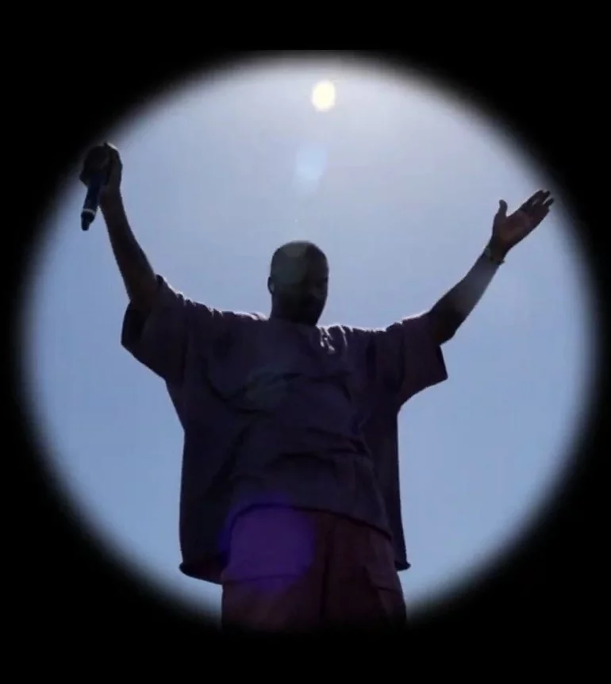

Muziek
Kanye zijn Muziek

Muziek
Kanye West is gewoonweg een super invloedrijke muzikant. Hij begon als een producer voor grote namen in de
muziekindustrie, en zijn beats waren al meteen te gek. Maar Kanye wilde meer, en in 2004 bracht hij zijn eerste
eigen album uit, "The College Dropout," dat meteen een grote hit werd.
Wat Kanye echt cool maakt, is zijn muzikale creativiteit. Hij gebruikt allerlei geluiden, van soul tot elektronisch,
om zijn muziek te maken. Nummers zoals "Jesus Walks" en "Through the Wire" laten zien hoe hij verschillende stijlen
combineert tot iets nieuws.
Zijn teksten zijn ook super diepgaand. Hij praat over allerlei onderwerpen, zoals materialisme, racisme en zijn
eigen persoonlijke problemen. Het is eerlijk en raakt je echt.
En wat helemaal tof is, is dat Kanye blijft experimenteren. Hij verandert zijn stijl en geluid van album tot album.
Hij heeft samengewerkt met legendes en nieuwkomers in de muziekindustrie.
Kanye heeft veel prijzen gewonnen, waaronder Grammy Awards, en wordt gezien als een van de grootste artiesten van
onze tijd. Zijn muziek heeft de weg vrijgemaakt voor andere artiesten om creatief te zijn en hun eigen ding te doen.
Kanye West is een inspiratie voor velen, en zijn muzikale erfenis zal nog heel lang doorklinken in de muziekwereld.